File: 000840.gt.txt (if the image is defective, simply delete all Arabic text and the line will be excluded)
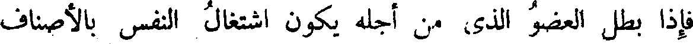
فإذا بطل العضو الذى من أجله يكون اشتغال النفس بالأصناف
File: 000841.gt.txt (if the image is defective, simply delete all Arabic text and the line will be excluded)
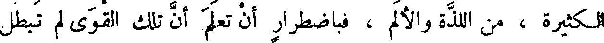
الكثيرة ، من اللذة والألم ، فباضطرار أن تعلم أن تلك القوى لم تبطل
File: 000842.gt.txt (if the image is defective, simply delete all Arabic text and the line will be excluded)
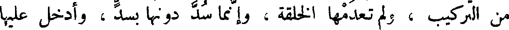
من التركيب ، ولم تعدمها الخلقة ، وإنما سد دونها بسد ، وأدخل عليها
File: 000843.gt.txt (if the image is defective, simply delete all Arabic text and the line will be excluded)
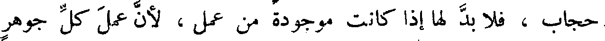
حجاب ، فلا بد لها إذا كانت موجودة من عمل ، لأن عمل كل جوهر
File: 000844.gt.txt (if the image is defective, simply delete all Arabic text and the line will be excluded)
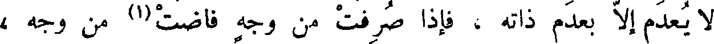
لا يعدم إلا بعدم ذاته ، فإذا صرفت من وجه فاضت(1) من وجه ،
File: 000845.gt.txt (if the image is defective, simply delete all Arabic text and the line will be excluded)
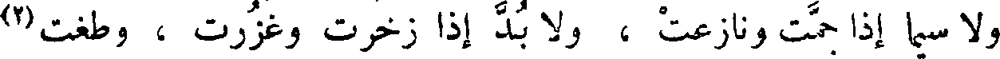
ولا سيما إذا جمت ونازعت ، ولا بد إذا زخرت وغزرت، وطغت(2)
File: 000846.gt.txt (if the image is defective, simply delete all Arabic text and the line will be excluded)
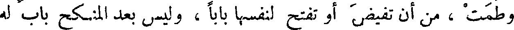
وطمت ، من أن تفيض أو تفتح لنفسها بابا ، وليس بعد المنكح باب له
File: 000847.gt.txt (if the image is defective, simply delete all Arabic text and the line will be excluded)
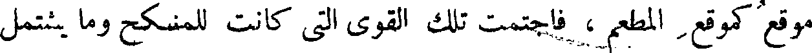
موقع كموقع المطعم ، فاجتمعت تلك القوى التى كانت للمنكح وما يشتمل
File: 000848.gt.txt (if the image is defective, simply delete all Arabic text and the line will be excluded)
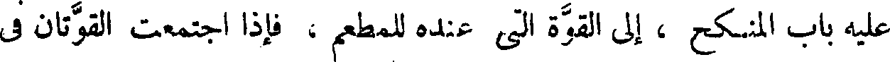
عليه باب المنكح ، إلى القوة التى عنده للمطعم ، فإذا اجتمعت القوتان فى
File: 000849.gt.txt (if the image is defective, simply delete all Arabic text and the line will be excluded)
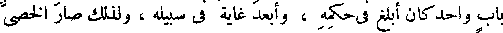
باب واحد كان أبلغ فى حكمه ، وأبعد غاية فى سبيله ، ولذلك صار الخصى
File: 000850.gt.txt (if the image is defective, simply delete all Arabic text and the line will be excluded)
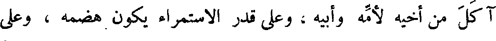
آكل من أخيه لأمه وأبيه ، وعلى قدر الاستمراء يكون هضمه ، وعلى
File: 000851.gt.txt (if the image is defective, simply delete all Arabic text and the line will be excluded)
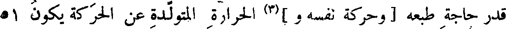
قدر حاجة طبعه [ وحركة نفسه و ](3) الحرارة المتولدة عن الحركة يكون 51
File: 000852.gt.txt (if the image is defective, simply delete all Arabic text and the line will be excluded)
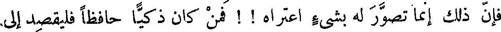
فإن ذلك إنما تصور له بشيء اعتراه ! ! فمن كان ذكيا حافظا فليقصد إلى
File: 000853.gt.txt (if the image is defective, simply delete all Arabic text and the line will be excluded)
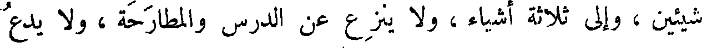
شيئين ، وإلى ثلاثة أشياء ، ولا ينزع عن الدرس والمطارحة ، ولا يدع
File: 000854.gt.txt (if the image is defective, simply delete all Arabic text and the line will be excluded)
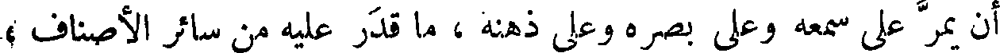
أن يمر على سمعه وعلى بصره وعلى ذهنه ، ما قدر عليه من سائر الأصناف ،
File: 000855.gt.txt (if the image is defective, simply delete all Arabic text and the line will be excluded)
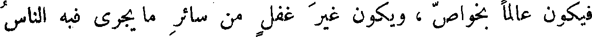
فيكون عالما بخواص ، ويكون غير غفل من سائر ما يجري فيه الناس
File: 000856.gt.txt (if the image is defective, simply delete all Arabic text and the line will be excluded)
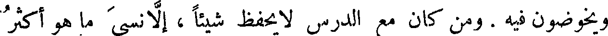
ويخوضون فيه . ومن كان مع الدرس لا يحفظ شيئا ، إلا نسى ما هو أكثر
File: 000857.gt.txt (if the image is defective, simply delete all Arabic text and the line will be excluded)
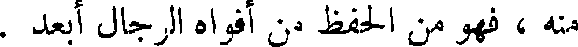
منه ، فهو من الحفظ من أفواه الرجال أبعد .
File: 000858.gt.txt (if the image is defective, simply delete all Arabic text and the line will be excluded)
( جمع الكتب )
File: 000859.gt.txt (if the image is defective, simply delete all Arabic text and the line will be excluded)
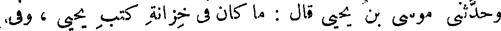
وحدثنى موسى بن يحيى قال : ما كان فى خزانة كتب يحيى ، وفى
File: 000860.gt.txt (if the image is defective, simply delete all Arabic text and the line will be excluded)
بيت مدارسه (1) كتاب إلا وله ثلاث نسخ .
File: 000861.gt.txt (if the image is defective, simply delete all Arabic text and the line will be excluded)
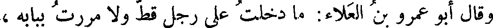
وقال أبو عمرو بن العلاء: ما دخلت على رجل قط ولا مررت ببابه ،
File: 000862.gt.txt (if the image is defective, simply delete all Arabic text and the line will be excluded)
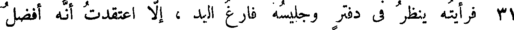
31 فرأيته ينظر في دفتر وجليسه فارغ اليد ، إلا اعتقدت أنه أفضل
File: 000863.gt.txt (if the image is defective, simply delete all Arabic text and the line will be excluded)
منه وأعقل .
File: 000864.gt.txt (if the image is defective, simply delete all Arabic text and the line will be excluded)
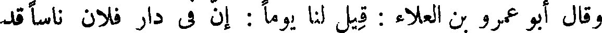
وقال أبو عمرو بن العلاء : قيل لنا يوما : إن فى دار فلان ناسا قد
File: 000865.gt.txt (if the image is defective, simply delete all Arabic text and the line will be excluded)
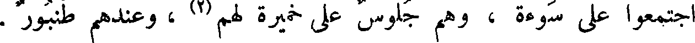
اجتمعوا على سوءة ، وهم جلوس على خميرة لهم (2) ، وعندهم طنبور .
File: 000866.gt.txt (if the image is defective, simply delete all Arabic text and the line will be excluded)
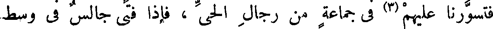
فتسورنا عليهم (3) فى جماعة من رجال الحى ، فإذا فتى جالس فى وسط
File: 000867.gt.txt (if the image is defective, simply delete all Arabic text and the line will be excluded)
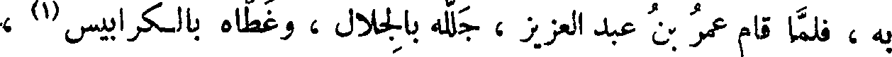
به ، فلما قام عمر بن عبد العزيز ، جلله بالجلال ، وغطاه بالكرابيس (1) ،
File: 000868.gt.txt (if the image is defective, simply delete all Arabic text and the line will be excluded)
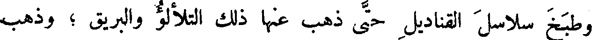
وطبخ سلاسل القناديل حتى ذهب عنها ذلك التلألؤ والبريق ؛ وذهب
File: 000869.gt.txt (if the image is defective, simply delete all Arabic text and the line will be excluded)
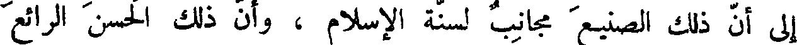
إلى أن ذلك الصنيع مجانب لسنة الإسلام ، وأن ذلك الحسن الرائع
To Save: `Ctrl+s`, make sure to choose `Webpage, complete`!